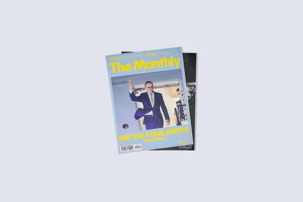
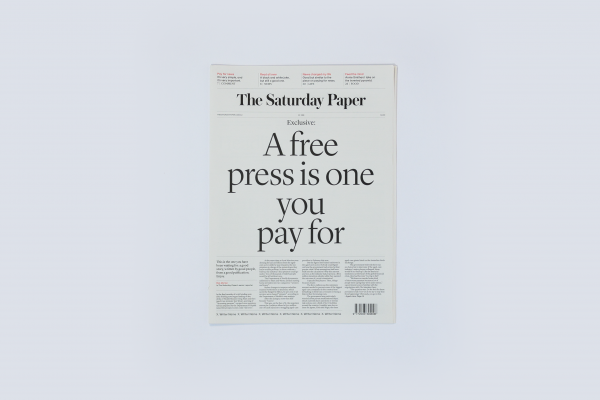

Journalism
The Saturday Paper is a weekly newspaper, dedicated to telling the
whole story. It publishes long-form accounts of the week’s key
stories.
Learn more

The Monthly
The Monthly publishes long-form journalism from the nation's leading
writers and thinkers, covering Australian politics, culture and
ideas.
Learn more
Advertise
The Saturday Paper
The Saturday Paper is a weekly newspaper, dedicated to telling the
whole story. It publishes long-form accounts of the week’s key
stories.
Learn more
Advertise

7 am
7am is a daily news podcast that tells the big stories through
in-depth interviews and sharp analysis.
Learn more
Advertise
Quarterly Essay

Quarterly Essay is the leading agenda-setting journal of politics
and culture in Australia.
Learn more
Advertise
Australian Foreign Affairs

Australian Foreign Affairs is the country’s leading foreign affairs
journal.
Learn more
Advertise
Advertise
Get in touch with our advertising team.
Learn more
Shop

In collaboration with Alpha60, The Saturday Paper and The Monthly
bring you a tote bag.
Shop now
Give a Gift

Give The Saturday Paper or The Monthly as a gift.
Gift
Careers
Work at the country’s leading independent publisher.
Learn more
News
Keep in touch with what is happening at Schwartz Media.
Learn more
Contact
Get in touch with our editorial and advertising teams.
Learn more